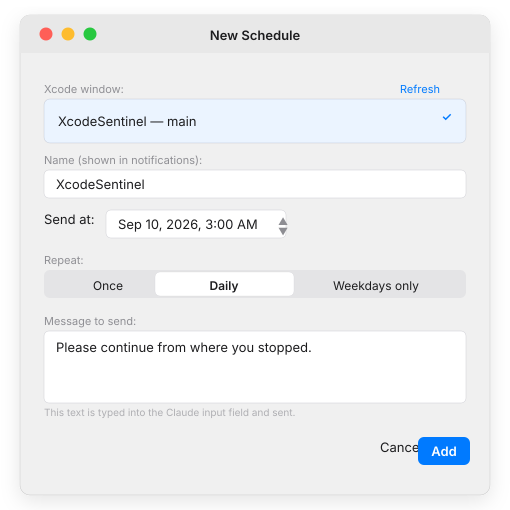
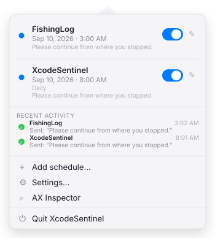
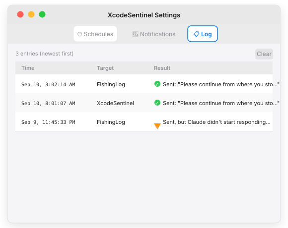

Keep your Xcode AI
coding while you sleep.
Claude, GitHub Copilot, Codex, and other AI assistants in Xcode stop when they hit a usage limit — and stay frozen until you're back. XcodeSentinel schedules a prompt for when the limit resets, so your AI picks up exactly where it left off.
Download XcodeSentinel
Free, open source, Developer ID signed & notarized.
macOS 15 (Sequoia) or later required
You kick off a long Claude, Copilot, or Codex coding session in Xcode at 11 PM. The usage limit resets at 4:00 AM — but you'll be asleep. Without XcodeSentinel, the session sits frozen until 9 AM when you finally open your laptop.
With XcodeSentinel: schedule a send for 4:10 AM and Claude picks up exactly where it left off — while you sleep.
How It Works
Features
Set any message to be typed into your Xcode AI panel (Claude, Copilot, Codex, etc.) at a specific time. Repeat daily, on weekdays, or just once. Survives sleep and restarts.
Every send attempt is logged with timestamp and outcome (Sent, Failed, Deferred). View the last 50 entries from the menu bar — no digging through Console.
Enable "Prevent screen lock" and the app holds a display-sleep assertion while schedules are pending, so the session fires even overnight.
Webhook support with ntfy / Pushover / Discord / Slack presets. Sends only the target name and status — never chat text or source code.
Dump any window's Accessibility tree to JSON. Export for bug reports or regression fixtures when Xcode updates change the UI structure.
Menu-bar app, no Dock icon. Pure Swift 6, zero external dependencies. Accessibility API only — no Screen Recording permission needed.
App Interface



Install in 3 Steps
Download the DMG
Grab the latest .dmg from GitHub Releases. Double-click to mount it, then drag XcodeSentinel to your Applications folder.
Launch — it lives in the menu bar
No Dock icon. XcodeSentinel appears as a clock icon (⏱) in the menu bar. Click it to open the schedule list.
Grant Accessibility permission
On first run, it opens System Settings → Privacy & Security → Accessibility. Toggle XcodeSentinel on. No Screen Recording or Full Disk Access needed.
Important Notes
⚠️ XcodeSentinel does not bypass or extend any usage limit. It only sends a message you pre-wrote — after the limit has already cleared. Limits still apply normally.
🎯 Scope is Xcode AI panels only. This app works with any AI chat panel inside Xcode (Claude, Copilot, Codex, etc.) that exposes an Accessibility API text input. Terminal-based tools (Claude Code CLI, etc.) and VS Code extensions are out of scope — those run outside Xcode and have their own auto-continue features.
🏪 Not on the Mac App Store. An app that uses the Accessibility API to drive another app cannot ship in the App Sandbox. Downloads come from GitHub Releases only.
🔑 v0.1.0 is an unsigned developer preview. First open: right-click → Open, or after copying run xattr -cr /Applications/XcodeSentinel.app in Terminal. Notarized signed release planned when Apple Developer ID credentials are configured in CI.
Requirements
- macOS 15 (Sequoia) or later
- Xcode with an AI integration enabled (Claude, Copilot, Codex, etc.)
- Accessibility permission (see Privacy for what's accessed)
Questions & Bug Reports
Open a GitHub Issue for bug reports or Xcode AX structure changes after an Xcode update. Or send an email directly.
About the Author
Built by a solo iOS/macOS developer. See the portfolio hub for other apps and tools.